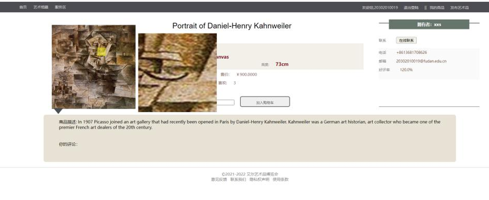
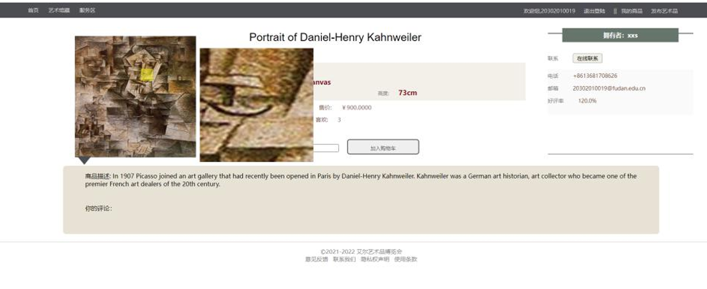

Game Engineering & Design
Explore my passion for creating immersive game experiences.
Pirate Assassin
This RPG game features gameplay systems including combat system, skills, animations, quests, and inventory management. Players engage in battles, explore quests,defeat and assassinate enemies. The project highlights my ability to be a game engineer and designer.
Interactive Media
This an interactive snow material that dynamically deforms with footprints by rendering a height map. The system uses a Render Target as a canvas to capture foot patterns via ray tracing and applies them to the snow surface in real time. To handle large scenes, the canvas moves with the character, preserving footprints and fading distant ones. Snow buildup is simulated by blurring footprints, generating a height map to represent depth. Realistic lighting and terrain displacement are achieved using normal maps and Virtual Heightfield Mesh.
Collision Star
Collision Star is a 2D Unity multiplayer game blending strategy and physics. Two players can collaborate or compete by modifying the environment and using reverse-drag mechanics to move players' planets. Players score points by colliding with objects, collecting items, and outwitting opponents while avoiding hazards like black holes and teleporters. Random power-ups and dynamic gameplay ensure a fun and competitive experience.
Touch My Night
Touch My Night is a 2D puzzle game. The narrative of the game involves guiding a blind girl home while preserving her inner light. By using skeleton animation, the character can walk fluently with just 3 pictures.
Working on particle system
The Niagara system can create a wide variety of stunning effects. When I want my game to be more impressive, I use it to create the corresponding effects.


Perfect World intern Using Unity
Utilized the Unity engine to design a firearm placement and inspection system in the Perfect World Esport (CS:GO). Implemented a virtual joystick and viewpoint control, enabling users to modify weapon positions and adjust lighting color tones interactively.
Plague Town
A simulation management game replicating the SIR disease model. Focuses on balancing survival and strategy.This is a research of Xiyuan project of Fudan University focusing on AI generating content and serious game. https://github.com/xxsKyrreZLX/PlagueTown
Programming & Web Development
Showcasing my expertise in building functional and responsive websites.
CodeTutor
A code visualization platform designed to enhance the learning and teaching experience for programers. It supports visualization of data structures, providing an intuitive way to understand how various data structures evolve during code execution. It also includes integrated video conferencing capabilities so that learners can get help from others
Perfect World intern using Vue
Built associated web pages using the Vue 2 framework, with Flexible Box for responsive and structured design in the Perfect World Esport (CS:GO). Developed features including leaderboards and data search functionalities for enhanced user interaction.
 


Aiur Art Trading Website
The Aiur Art Trading Website is a platform with both front-end and back-end functionalities. Users can manage their accounts, search by name, author, popularity, or rating, comment, buy, upload products, and view browsing history. The platform also have many features like secure password salting, dynamic password strength indicators, and responsive design.